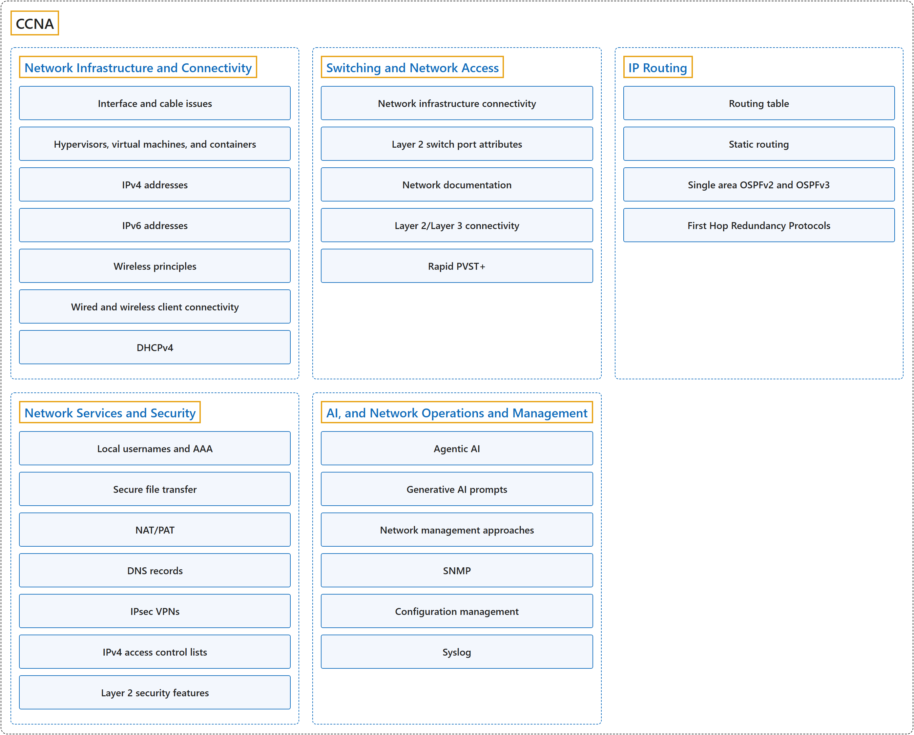

CCNA
Classification

Glossary
| Term | Definition | 中文翻译 | Source |
|---|---|---|---|
| CCNA CCNA |
"CCNA validates a broad range of fundamentals for all IT careers - from networking technologies, to security, to software development - proving you have the skills businesses need to meet market demands." | CCNA 验证适用于所有 IT 职业的广泛基础知识，从网络技术到安全，再到软件开发，证明你具备企业满足市场需求所需的技能。 | Cisco, n.d.-b, "Validate essential skills in enterprise networking" section, para. 1 |
| Network Infrastructure and Connectivity 网络基础设施与连接 |
(context) "Network infrastructure refers to the hardware and software that enable network connectivity and communication between users, devices, apps, the internet, and more." | （语境）网络基础设施是指硬件和软件，它们实现用户、设备、应用、互联网等之间的网络连接和通信。 | Cisco, n.d.-e, para. 1 |
| Switching and Network Access 交换与网络接入 |
(context) "A network switch is a vital component of a computer network that connects multiple devices, like computers, printers, and servers, within a local area network (LAN)." | （语境）网络交换机是计算机网络的重要组成部分，它连接多台设备（例如计算机、打印机和服务器），范围是局域网之内（LAN）。 | Cisco, n.d.-d, "What is a network switch?" section, para. 1 |
| IP Routing IP 路由 |
"Routing is the process of selecting and defining paths for IP-packet traffic within or between networks as well as the process of managing network traffic overall." | 路由是为 IP 数据包流量选择和定义路径的过程（在网络内或网络之间），也是整体管理网络流量的过程。 | Cisco, n.d.-h, para. 1 |
| Network Services and Security 网络服务与安全 |
(context) "Network services are applications at the network application layer that connect users working in offices, branches, or remote locations to applications and data in a network." "Network security combines policies and technologies to protect systems and digital assets from unauthorized access, misuse, and disruption." |
（语境）网络服务是网络应用层上的应用，把在办公室、分支机构或远程位置工作的用户连接到网络中的应用和数据。 网络安全结合策略和技术，保护系统和数字资产免遭未授权访问、滥用和中断。 |
Cisco, n.d.-c, para. 1 Cisco, n.d.-g, para. 1 |
| AI, and Network Operations and Management AI 与网络运维和管理 |
(context) "Network management encompasses both the essential processes and the specialized platforms used by IT and NetOps teams to configure, monitor, and optimize network performance." | （语境）网络管理涵盖基本流程和专用平台，IT 和 NetOps 团队用它们来配置、监控和优化网络性能。 | Cisco, n.d.-f, para. 1 |
Coverage
References
- Cisco. (n.d.-a). 200-301 CCNA exam topics and study guide (Version 2.0). Cisco Learning Network. Retrieved October 25, 2026, from https://learningnetwork.cisco.com/s/ccna-v2-exam-topics
- Cisco. (n.d.-b). CCNA. Retrieved October 24, 2026, from https://www.cisco.com/site/us/en/learn/training-certifications/certifications/enterprise/ccna/index.html
- Cisco. (n.d.-c). What are network services? Retrieved October 27, 2026, from https://www.cisco.com/site/us/en/learn/topics/networking/what-are-network-services.html
- Cisco. (n.d.-d). What are the different types of network switches? Retrieved October 27, 2026, from https://www.cisco.com/site/us/en/learn/topics/small-business/what-are-the-different-types-of-network-switches.html
- Cisco. (n.d.-e). What is network infrastructure? Retrieved October 27, 2026, from https://www.cisco.com/site/us/en/learn/topics/networking/what-is-network-infrastructure.html
- Cisco. (n.d.-f). What is network management? Retrieved October 27, 2026, from https://www.cisco.com/site/us/en/learn/topics/networking/what-is-network-management.html
- Cisco. (n.d.-g). What is network security? Retrieved October 27, 2026, from https://www.cisco.com/site/us/en/learn/topics/security/what-is-network-security.html
- Cisco. (n.d.-h). What is routing? Retrieved October 27, 2026, from https://www.cisco.com/site/us/en/learn/topics/networking/what-is-routing.html